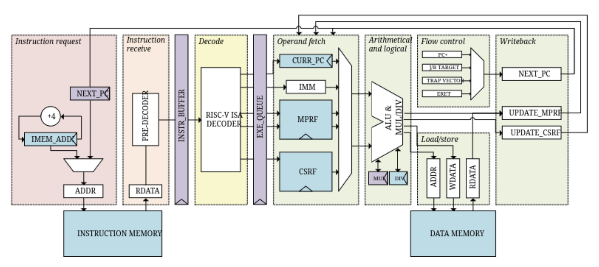

Отчёт от 30.10.2023
О чём?
Рассмотрели список ядер по ссылке https://github.com/riscvarchive/riscv-cores-list/blob/master/README.md. Выбрали несколько ядер для первоочередного рассмотрения.
Критерии отбора:
- Открытая лицензия
- Язык: Verilog или System Verilog
Результаты
Первым делом отфильтровали весь список по требованиям, представленным выше, получили список из 19 ядер, удовлетворяющих этим требованиям:
| Название | Репозиторий |
|---|---|
| CV32E40P | https://github.com/openhwgroup/cv32e40p |
| Ibex (formerly Zero-riscy) | https://github.com/lowRISC/ibex |
| CVA6 | https://github.com/openhwgroup/cva6 |
| OPenV/mriscv | https://github.com/onchipuis/mriscv |
| Roa Logic RV12 | https://github.com/roalogic/RV12 |
| SCR1 | https://github.com/syntacore/scr1 |
| Hummingbird E200 | https://github.com/SI-RISCV/e200_opensource |
| PicoRV32 | https://github.com/cliffordwolf/picorv32 |
| SERV | https://github.com/olofk/serv |
| SweRV EH1 | https://github.com/chipsalliance/Cores-SweRV |
| SweRV EL2 | https://github.com/chipsalliance/Cores-SweRV-EL2 |
| SweRV EH2 | https://github.com/chipsalliance/Cores-SweRV-EH2 |
| biRISC-V | https://github.com/ultraembedded/biriscv |
| DarkRISCV | https://github.com/darklife/darkriscv |
| SSRV | https://github.com/risclite/SuperScalar-RISCV-CPU |
| Tinyriscv | https://github.com/liangkangnan/tinyriscv |
| RSD | https://github.com/rsd-devel/rsd |
| Kronos | https://github.com/SonalPinto/kronos |
| Steel | https://github.com/rafaelcalcada/steel-core |
Заинтересовавшие ядра
- SCR1
- CVA6
- PicoRV32
Что дальше?
Выберем три ядра и копнём глубже в их документацию, постараемся ознакомится с микроархитектурой и устройством каждого из них, а также оценим их функциональные возможности.
CVA6 - первое мнение

CVA6 - процессорное ядро risc-v с 6-ступенчатым конвейером, имеет отдельный сайт с документацией по использованию и устройству (https://docs.openhwgroup.org/projects/cva6-user-manual/), для каждой стадии есть отдельный блок документации, в целом, перые впечатления приятные, документация выглядит досаточно подробной, а репозиторий имеет неплохую активность.
SCR1 - первое мнение


Документация (https://github.com/syntacore/scr1/tree/master/docs) не выглядит дружелюбной на первый взгляд, но углубившись лучше можно заметить, что отдельный блоки описаны достаточно подробно, в том числе имеются временные диаграммы.
PicoRV32 - первое мнение
Изначально подавал большие надежды, но документация оставляет желать лучшего, кроме README других заметок по архитектуре нет, но возможно мы ошибаемся и ещё не нашли то, что нужно. Также следует отметить, что репозиторий не обновляется уже как 2 года. Из интересного: всё описание ядра содержится в одном verilog файле, несмотря на описанные выше недостатки, ознакомиться стоит.
CVA6 - углубление
Особенностью данной реализации является наличие 6-ти стадий конвейера, в отличие от классического конвейера с 5-ю стадиями.
PC Generation отвечает за вычисление адреса следующей инструкции, а также учёт ветвлений в данном процессе. Имеет специальные блоки BHT (Branch History Table), содержащий историю “прыжков” PC, и BTB (Branch Target Buffer) буфер ветвления. Также PC Gen на основе истории ветвлений пытается предсказывать грядущие ветвления.

Также есть возможность декодировать сокращенные команды, которые занимают 16 бит, а не 32, как в классическом варианте.
Есть возможность работы с CSR инструкцией, при этом для работы с ней создан отдельный буфер, так как инструкция CSR изменяет состояние архитектуры.
Обзор микроархитектуры проводился на основе приложенной документации https://docs.openhwgroup.org/projects/cva6-user-manual/03_cva6_design/intro.html